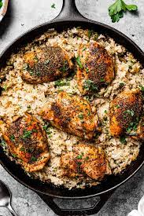

Chicken and Rice

Description
This simple, affordable, and absolutely irresistible meal will warm you up from the inside out.
Ingredients
- 3 chicken breasts, cut into cubes
- 2 cups water
- 2 cups white rice
- 1 (10.75 ounce) can cream of chicken soup
- 1 (10.75 ounce) can cream of celery soup
- 1 (10.75 ounce) can cream of mushroom soup
- salt and ground black pepper to taste
- 1/2 cup butter, sliced into pats
Directions
- Preheat oven to 400 degrees F. Grease sides and bottom of a casserole dish.
- Stir chicken, water, rice, cream of chicken soup, cream of celery soup, and cream of mushroom soup together in the prepared casserole dish; season with salt and pepper.
- Arrange butter evenly over the top of the chicken mixture.
- Bake in preheated oven until the rice is tender and the chicken is cooked through, 1 hour to 75 minutes. Cool 10 to 15 minutes before serving.